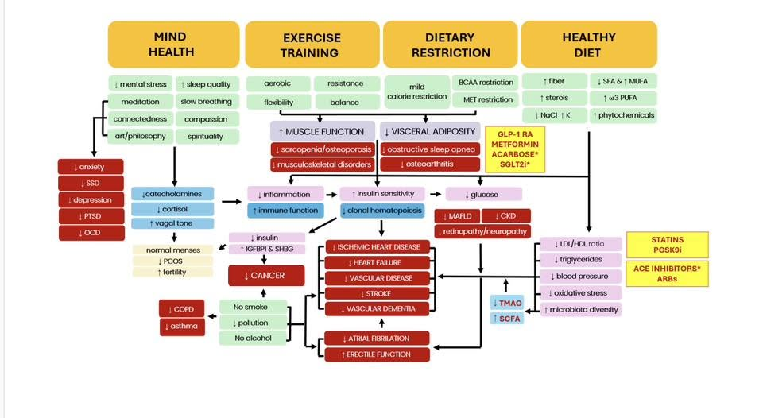

A thought after reading the new JAMA editorial on lipid lowering in 2026:
Paper · JAMA · 2026Lipid Lowering in 2026: Still Asking When, in Whom, and How.pubmed.ncbi.nlm.nih.gov
We are becoming extraordinarily good at lowering LDL cholesterol.
With statins, ezetimibe, and PCSK9 inhibitors, we can now drive LDL-C to levels that would have seemed almost unattainable a generation ago. And for atherosclerotic cardiovascular disease, that matters. A lot.
But the second part of the discussion is the one that interests me most.
Many of the patients we see today are not simply “people with high LDL.” They are people with visceral obesity, excess ectopic fat, insulin resistance, hyperinsulinemia, fatty liver, chronic inflammation, gut disbiosis, leaking gut, hypertension, impaired muscle function, poor fitness, poor sleep, and emotional distress.
So a paradox is emerging:
A patient can have:
- LDL-C 40 mg/dL
- glucose controlled with medication
- blood pressure controlled with medication
…and still be profoundly metabolically unhealthy.
In that situation, we may be treating one major pathway very well, while leaving much of the underlying biology untouched.
This is not an argument against lipid lowering. Far from it. Lowering apoB-containing lipoproteins remains essential for preventing atherosclerotic events.
But it is a reminder that cardiometabolic health is bigger than LDL.
If someone remains sedentary, eats a poor-quality diet, carries excess visceral fat, and lives with chronic metabolic/hormonal/immune dysfunction, then even excellent control of LDL, glucose, and blood pressure does not fully restore health. It lowers risk, yes. But it does not normalize physiology and biology.
That is why I think the most important question in 2026 is not only:
How low should we lower LDL?
It is also:
Are we mistaking good control of biomarkers for true restoration of metabolic health?
We need both:
- precise pharmacology
- and serious attention to the upstream causes of disease
Because the goal is not simply to create a patient with better numbers.
The goal is to create a patient with less disease.
#Lipidology #CardiometabolicHealth #Obesity #InsulinResistance #PreventiveCardiology #MetabolicHealth #healthspan

